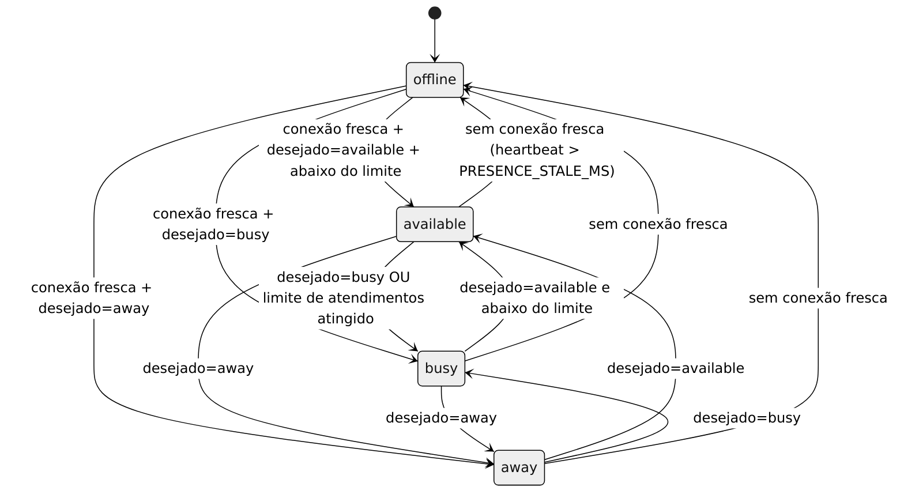

Presença
Estados
available, busy, away e offline. O agente só escolhe os três primeiros (presence.set); o servidor calcula o estado efetivo (resolveStatus em modules/presence.ts):
- sem conexão com heartbeat recente →
offline; - escolha
away→away; escolhabusy→busy; - escolha
available→busyse os atendimentos atingiram o limite, senãoavailable.
Diagrama: presence-states. Não existe tabela de transições permitidas: qualquer estado pode seguir outro conforme as entradas acima.
Presença × conectividade
Conectividade é a existência de linha fresca em agent_connections (uma por socket, com last_heartbeat_at). Presença é a escolha do agente (agent_presence.desired_status, padrão efetivo available) combinada com a conectividade e a carga. O console envia presence.heartbeat a cada 15 s; o servidor remove conexões sem heartbeat além de PRESENCE_STALE_MS (padrão 45 s) a cada 15 s (sweep_stale_agent_connections). Fechar uma aba não publica offline se outra conexão do mesmo agente estiver fresca. Queda de rede não devolve conversas à fila. Supervisores e admins também registram conexão e enviam heartbeat, mas não usam presence.set.
Efeito
Só available assume atendimento. busy/away/offline mantêm conversas atuais e recusam novos claims (capacity ou invalid_state).
Histórico
presence_intervals registra intervalos (inclui offline), com no máximo um aberto por agente (índice único parcial). Mudança de estado fecha o intervalo e abre outro.
Evento: presence.updated { agentId, status }.
Diagramas referenciados
